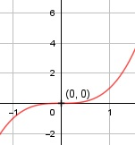

Aufgabe 16 f(x) = x3 f'(x) = 3x2, f''(x) = 6x, f'''(x) = 6 Definitionsbereich: -∞ < x < ∞ Wertebereich: -∞ < f(x) < ∞ Asymptoten: - Symmetrie zur y-Achse bzw. zum Punkt (0|0): f(-x) = (-x)3 f(-x) = -x3 ≠ f(x) --> keine Achsensymmetrie -f(-x) = -(-x3) -f(-x) = x3 = f(x) --> Punktsymmetrie Nullstellen: f(x) = 0 x3 = 0 |∛ x1,2,3 = 0 --> N1,2,3 (Sattelpunkt) (0|0) Schnittpunkt mit der y-Achse: x = 0 f(0) = 03 = 0 Sy(0|0) Extrempunkte: f'(x) = 0 3x2 = 0 |:3 --> x2 = 0 |√ x1,2 = 0, f(0) = 0 f''(x) = 6x = 0 |:6 f''(x) = 0 --> keine Extrempunkte Wendepunkte: f''(x) = 0 6x = 0 |6 --> x = 0, f(0) = 0 f'''(x) = 6 ≠ 0 --> Wendepunkt (0|0) Graph:
